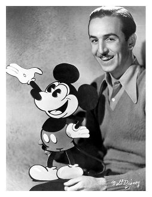
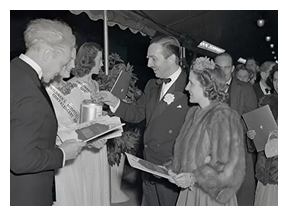
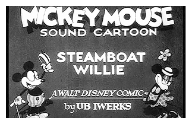

Walt Disney nacque a Chicago, Illinois, il 5 dicembre del 1901 e morì nel 1966.
Visse un infanzia complicata, all’età di 5 anni e la sua famiglia si trasferì in Missouri per lavorare in una fattoria. Negli anni lavorò anche per un’attività vendendo giornali con suo fratello Roy, con cui collaborerà in futuro.
Nel 1910 il padre vinse l’appalto per distribuire i giornali in città, così Walter e Roy iniziarono a lavorare con lui.
A sedici anni partì per la Francia, dove fu volontario per la Croce Rossa durante la Prima Guerra Mondiale.

I primi passi nel mondo dell’arte e del cinema
Nel 1919 rientrò a Kansas City motivato a lavorare nel mondo del cinema. Iniziò un corso all’Art Institute of Chicago e nel 1917 si diplomò alla Benton School. Walter si appassionò al disegno e iniziò a lavorare per un'agenzia di pubblicità, dove incontrò l’ animatore e fumettista Ub Iwerks con cui fondò nel 1920 la Pesman-Rubin Commercial Art Studio.
Qui realizzarono dei cartoni satirici e delle animazioni pubblicitarie. Nel frattempo decise di optare per la produzione di cortometraggi di animazione, con risultati di successo. Il 23 maggio del 1922 fondò la Newman Laugh-O-Grams, che presto crebbe e assunse talenti del calibro di Friz Freleng, Carmen Maxwell, Hugh Harman e Rudolph Ising.
Walter Elias Disney iniziò a realizzare il suo primo film, Alice’s Wonderland, sia con personaggi reali che animati. I costi furono però alti e l’azienda fallì nel 1923.

L'arrivo a Hollywood
Dopo l’esperienza negativa si trasferì a Hollywood dove, nello stesso anno, fondò i Disney Brothers Studios con il fratello Roy. Nel 1926, questi assunsero il nome di Walt Disney Studios e poi nel 1928 quello di Walt Disney Productions. Iniziò così il periodo di successo con titoli come: Alice Comedies e Oswald The Lucky Rabbit.
Sempre in quell’anno Walt Disney si recò a New York per discutere con Charles B. Mintz, che gestiva la Universal Pictures, della produzione di una serie basata su Oswald The Lucky Rabbit. Il compenso offerto non fu all’altezza delle aspettative e Disney rifiutò la collaborazione.
Mintz, però, aveva già ingaggiato molti degli animatori che avevano lavorato per Walter Elias e aveva ottenuto il marchio del personaggio di Oswald e, dunque, era in grado di realizzare la serie in autonomia.

La nascita di Topolino
Dopo la vicenda finita male, Walt Disney iniziò a lavorare a un nuovo personaggio per il cinema. Partendo da Oswald, che era un coniglio, realizzò quello che viene definito Mortimer Mouse, rinominato poi Mickey Mouse, Topolino. Con l’ideazione di questo personaggio la carriera di Walt Disney subì uno slancio e il suo nome divenne leggenda.
Nel 1928 venne presentato il cortometraggio dal titolo Plane Crazy, in cui comparvero per la prima volta sugli schermi Mickey Mouse e Minnie Mouse. Sempre nel 1928 Walt Disney presentò il suo ultimo lavoro a New York, dal titolo Steambot Willie, che fu il primo cartone animato con il sonoro. Mickey Mouse diventò un personaggio noto e registrò un successo senza precedenti.
Nel 1929 venne prodotta una nuova serie di cartoni con sonoro, Silly Symphonies, che tre anni più tardi diventarono dei cartoni a colori. Il primo fu Fiori e alberi che ottenne l’Oscar come miglior cortometraggio come cartone animato nel 1932.
Tutto il resto è storia...